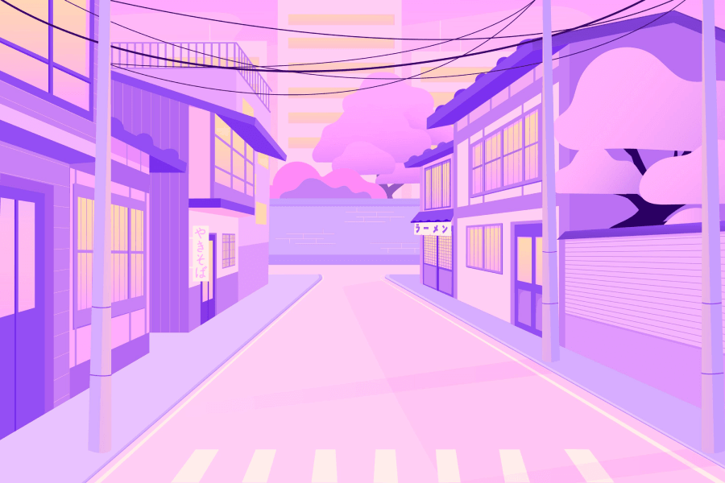

Почему сосредоточиться так сложно
-
Многозадачность
Особенно сложно сосредоточиться, когда задач много и все они — важные. Где же легендарная многозадачность, когда она так нужна вам (и всем нанимающим менеджерам этого мира)? А дело в том, что её просто не существует. Исследователи выяснили, что мозгу тяжело концентрироваться даже на двух делах одновременно. А когда в поле внимания попадает несколько важных задач, организм паникует и выделяет кортизол и адреналин — «гормоны стресса». Из-за этого мы работаем невнимательно: ошибаемся и быстро устаём.
-
Дофамин
С гормонами стресса всё понятно, но дальше — ещё интереснее. В нашей невозможности сосредоточиться замешана и полная противоположность стрессу — дофамин. Это вещество участвует в системе вознаграждения мозга. Причём тут он? Мы часто отвлекаемся от важной задачи на что-то более «приятное» для мозгов. Например, смотрим лайки в соцсетях. В это время и выделяется дофамин — и мы чувствуем удовольствие. Получается замкнутый круг: чем больше отвлекаешься, тем больше удовольствия получаешь.
Что снижает концентрацию внимания?
-
Многозадачность
Как концентрация может снижаться из-за… концентрации? Любая стрессовая ситуация (и резко меняющийся мир в целом) заставляет наш мозг постоянно «сканировать» окружающую среду на предмет опасности. Например, читать новости вместо работы. Но быть собранными всё время — невозможно. Концентрация тратится как ресурс. Чем больше мы её расходуем, тем сложнее сосредоточиться.
-
Еда
«Быстрые углеводы» — сахар, белый хлеб, сладости — молниеносно доставляют в мозг энергию и помогают ему ненадолго включиться. Но у такой энергии есть обратная сторона: она быстро заканчивается. Из-за резкого скачка сахара организм вырабатывает инсулин, а затем уровень глюкозы падает. Вместе с ним падают внимание и желание работать.
-
Гаджеты
Да-да, это та самая ситуация, когда на экране горит уведомление, а рука уже сама тянется к телефону. Исследователи называют такие устройства «внешними триггерами»: они постоянно обещают нам новый кусочек информации, а значит — новый дофамин. Чем чаще мы переключаемся, тем сложнее вернуться к долгой и вдумчивой работе.
Как концентрироваться лучше, чем золотая рыбка (то есть дольше трёх секунд)
5 простых (на самом деле не очень) советов
-
Представьте небо и облака
Или листья в ручье. Тут дело в лёгкой медитации, которая помогает замедлиться. Внимание не нужно «заставлять» работать: попробуйте наблюдать за мыслями, не оценивая их. Когда заметили, что отвлеклись, спокойно вернитесь к задаче.
-
Включите музыку
Но не любую, а ту, которая не будет конкурировать за внимание с текстом и мыслями. Подойдут эмбиент, белый шум, звуки дождя или плейлист без слов. Такая музыка помогает закрыть лишние звуки и сделать рабочую среду более предсказуемой.
-
Прогуляйтесь
Даже короткая прогулка снижает тревожность и помогает мозгу переключиться. Особенно хорошо работает прогулка без телефона: тогда вы действительно отдыхаете от потока стимулов, а не переносите его с ноутбука на маленький экран.
-
Хорошо ешьте
Речь не о строгой диете, а о стабильной энергии. Белки, сложные углеводы, овощи и вода помогают избегать резких скачков сахара и усталости. А ещё не забывайте про перерывы: голодный мозг будет думать о еде, а не о задаче.
-
Читайте
Настоящие бумажные книги. Это тренировка длительного внимания: страницы не присылают уведомления, не предлагают открыть соседнюю вкладку и не считают, сколько секунд вы удержали взгляд. Начните с десяти минут в день — и постепенно увеличивайте время.
А можно в картинках?


